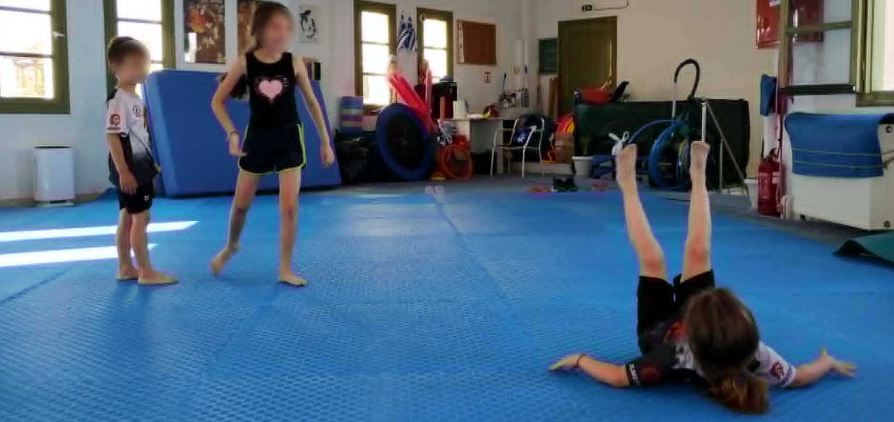

Οι γονείς συνήθως φοβούνται την επαφή και τις πτώσεις. Όμως ο πραγματικός κίνδυνος δεν είναι η πτώση, αλλά η άγνοια του παιδιού για το πώς να πέσει σωστά.
Στις περισσότερες αθλητικές δραστηριότητες η πτώση θεωρείται κάτι αρνητικό. Στις πολεμικές τέχνες όμως η σωστή πτώση αποτελεί μια δεξιότητα που διδάσκεται.
Η σωστή εκμάθηση των ukemi (受身), δηλαδή των τεχνικών ασφαλούς πτώσης, αποτελεί ένα από τα σημαντικότερα στοιχεία της εκπαίδευσης στο Sumo, στο Judo και γενικότερα στις πολεμικές τέχνες που περιλαμβάνουν επαφή και ρίψεις (jujutsu, sambo, πάλη).
Το παιδί δεν μαθαίνει απλώς να πέφτει.
Μαθαίνει να ελέγχει το σώμα του σε μια δύσκολη κατάσταση.
Η πτώση απαιτεί πολύπλοκο συνδυασμό νευρομυϊκών ικανοτήτων:
Όταν ένα παιδί μαθαίνει ukemi, εκπαιδεύει το νευρικό του σύστημα να αντιδρά σωστά σε μια απρόβλεπτη αλλαγή θέσης.
Αυτή η ικανότητα δεν αφορά μόνο το τατάμι.
Είναι μια δεξιότητα ζωής.
Τα ανθρώπινα αντανακλαστικά μας σε μια πτώση είναι συχνά λανθασμένα. Μέσα από την προπόνηση τα αλλάζουμε, ώστε να μπορούμε να πέφτουμε με μεγαλύτερη ασφάλεια.
Ο φόβος της πτώσης είναι φυσιολογικός.
Ένα μικρό παιδί που δεν έχει εμπειρία κίνησης μπορεί:
Αυτό συμβαίνει επειδή ο εγκέφαλος δεν έχει ακόμη δημιουργήσει τα σωστά κινητικά πρότυπα.
Με τη σωστή προπόνηση όμως, η κίνηση γίνεται σταδιακά πιο φυσική. Το παιδί αποκτά εμπιστοσύνη στο σώμα του.
Η εκπαίδευση δεν ξεκινά ποτέ με δύσκολες πτώσεις. Ακολουθεί μια προοδευτική διαδικασία:
Το παιδί μαθαίνει:
Στη συνέχεια εκπαιδεύονται:
Το επόμενο στάδιο είναι η εφαρμογή:
Το παιδί δεν μαθαίνει μια απομονωμένη τεχνική.
Μαθαίνει να διαχειρίζεται μια πραγματική κατάσταση κίνησης.
Ένα παιδί που φοβάται να πέσει συχνά φοβάται και να δοκιμάσει οποιαδήποτε δυναμική τεχνική που απαιτεί απώλεια ισορροπίας.
Αντίθετα, ένα παιδί που γνωρίζει ότι μπορεί να προστατέψει τον εαυτό του:
Η φράση «πέφτω και σηκώνομαι» αποκτά πραγματική σημασία.
Οι τεχνικές ukemi δεν έχουν εφαρμογή μόνο στις πολεμικές τέχνες.
Τα παιδιά πέφτουν:
Η γνώση σωστής αντίδρασης μπορεί να μειώσει σημαντικά τον κίνδυνο τραυματισμού.
Το Sumo είναι άθλημα ισορροπίας, δύναμης και ελέγχου του σώματος.
Παρότι ο στόχος είναι η ώθηση ή η ανατροπή του αντιπάλου, η ασφάλεια του αθλητή είναι πάντα πρώτη προτεραιότητα.
Για αυτό η εκπαίδευση ξεκινά από τις βασικές αρχές:
Πριν ένα παιδί μάθει να κερδίζει έναν αγώνα, πρέπει πρώτα να μάθει να προστατεύει τον εαυτό του.
Η εκμάθηση των ukemi είναι ένα από τα μεγαλύτερα δώρα που μπορεί να προσφέρει μια πολεμική τέχνη σε ένα παιδί.
Δεν μαθαίνει μόνο πώς να πέφτει.
Μαθαίνει πώς να αντιμετωπίζει μια δυσκολία, να ελέγχει τον φόβο του και να σηκώνεται ξανά.
Για αυτό στις πολεμικές τέχνες η πτώση δεν είναι αποτυχία.
Είναι μέρος της εξέλιξης.
